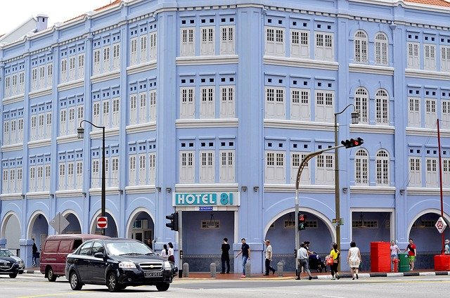

üè® Hoteles y Alojamiento
 En nuestra feria de viajes no gestionamos directamente reservas de alojamiento.Sin embargo, queremos facilitarte la planificación de tu viaje recomendándote algunas plataformas confiables donde podrás encontrar hoteles y otros tipos de alojamiento al mejor precio.
üåê Plataformas recomendadas para reservar alojamiento:
- Booking.com – Amplia oferta de hoteles, apartamentos y alojamientos con cancelación flexible.
- Atrapalo – Ofertas en hoteles, escapadas y paquetes combinados.
- Hotels.com – Programa de recompensas con noches gratis tras varias reservas.
- Trivago – Comparador de precios de hoteles en múltiples plataformas.
üí° Consejos útiles:
Aunque estas plataformas ofrecen buenas ofertas, te recomendamos visitar también la web oficial del hotel que te interese.
A menudo los hoteles ofrecen precios más bajos o beneficios adicionales (como desayuno gratis, cancelación más flexible o mejoras de habitación) si reservas directamente con ellos.
- Siempre verifica que la web sea HTTPS.
- Procura usar una tarjeta online con seguro de viajes.
- Ten en tu teléfono una lista de sitios de referencia; centros médicos, consulado, policía... Mejor preparase para cualquier cosa.